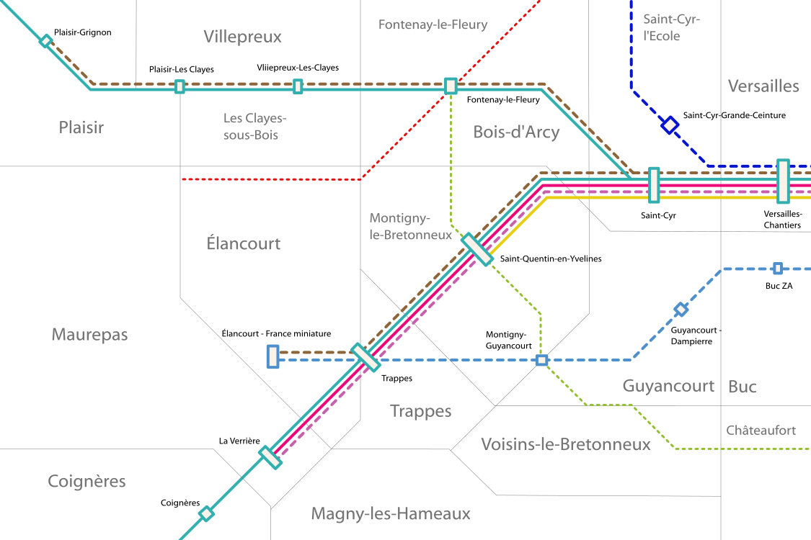

Saint-Quentin-en-Yvelines
Communes de Bois-d'Arcy, Fontenay-le-Fleury, Élancourt, Guyancourt, Magny-les-Hameaux, Maurepas, Montigny-le-Bretonneux, Voisin-le-Bretonneux


 La ville nouvelle de Saint-Quentin-en-Yvelines pôle majeur de l'ouest de l'Île-de-France.
La ville nouvelle de Saint-Quentin-en-Yvelines pôle majeur de l'ouest de l'Île-de-France.
La ville nouvelle de Saint-quentin-en-Yvelines est l'une des 5 villes nouvelles de l'Île-de-France où se regroupent de nombreuses entreprises de pointe et établissements universitaires. Elle souffre d'un problème de rapidité des liaisons avec le reste de l'Île-de-France.
Pour palier à ce problème, le projet grand Paris Express avait prévu une ligne 18 du métro dont la création suivant ce que prévoit le projet initial est fortement débattue.
Pour palier au problème de connectivité avec le reste de le région, le Plan Ile-de-France propose deux projets qui reprennent de loin la ligne verte du projet originel du Grand Paris Express: la ligne 18 du métro pour relier Saint-Quentin-en-Yvelines à Massy-Palaiseau et Orly et le métro sud pour relier Saint-Quentin-en-Yvelines à Rueil-Malmaison et à Paris.
Pour tenir compte de la saturation chronique de l'autoroute A86, le Plan Ile-de-France propose l'extension du RER B de Robinson à Élancourt.
Carte
{kind=link}

Cliquer pour agrandir